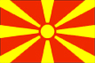
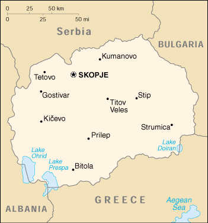

{kind=link}


| Macedonia, The Former Yugoslav Republic of |
 |
|
|  | |
| Introduction |
Background: International recognition of The Former Yugoslav Republic of Macedonia's (FYROM) independence from Yugoslavia in 1991 was delayed by Greece's objection to the new state's use of what it considered a Hellenic name and symbols. Greece finally lifted its trade blockade in 1995, and the two countries agreed to normalize relations. FYROM's large Albanian minority and the de facto independence of neighboring Kosovo continue to be sources of ethnic tension.
| Geography |
Location: Southeastern Europe, north of Greece
Geographic coordinates: 41 50 N, 22 00 E
Map references: Europe
Area:
total:
25,333 sq km
land:
24,856 sq km
water:
477 sq km
Area - comparative: slightly larger than Vermont
Land boundaries:
total:
748 km
border countries:
Albania 151 km, Bulgaria 148 km, Greece 228 km, Serbia and Montenegro 221 km (all with Serbia)
Coastline: 0 km (landlocked)
Maritime claims: none (landlocked)
Climate: warm, dry summers and autumns and relatively cold winters with heavy snowfall
Terrain: mountainous territory covered with deep basins and valleys; three large lakes, each divided by a frontier line; country bisected by the Vardar River
Elevation extremes:
lowest point:
Vardar River 50 m
highest point:
Golem Korab (Maja e Korabit) 2,753 m
Natural resources: chromium, lead, zinc, manganese, tungsten, nickel, low-grade iron ore, asbestos, sulfur, timber, arable land
Land use:
arable land:
24%
permanent crops:
2%
permanent pastures:
25%
forests and woodland:
39%
other:
10% (1993 est.)
Irrigated land: 830 sq km (1993 est.)
Natural hazards: high seismic risks
Environment - current issues: air pollution from metallurgical plants
Environment - international agreements:
party to:
Air Pollution, Biodiversity, Climate Change, Hazardous Wastes, Law of the Sea, Ozone Layer Protection, Wetlands
signed, but not ratified:
none of the selected agreements
Geography - note: landlocked; major transportation corridor from Western and Central Europe to Aegean Sea and Southern Europe to Western Europe
| People |
Population: 2,041,467 (July 2000 est.)
Age structure:
0-14 years:
23% (male 248,400; female 230,091)
15-64 years:
67% (male 684,025; female 678,014)
65 years and over:
10% (male 89,539; female 111,398) (2000 est.)
Population growth rate: 0.04% (2000 est.)
Birth rate: 13.73 births/1,000 population (2000 est.)
Death rate: 7.69 deaths/1,000 population (2000 est.)
Net migration rate: -5.66 migrant(s)/1,000 population (2000 est.)
Sex ratio:
at birth:
1.08 male(s)/female
under 15 years:
1.08 male(s)/female
15-64 years:
1.01 male(s)/female
65 years and over:
0.8 male(s)/female
total population:
1 male(s)/female (2000 est.)
Infant mortality rate: 13.35 deaths/1,000 live births (2000 est.)
Life expectancy at birth:
total population:
73.79 years
male:
71.58 years
female:
76.19 years (2000 est.)
Total fertility rate: 1.82 children born/woman (2000 est.)
Nationality:
noun:
Macedonian(s)
adjective:
Macedonian
Ethnic groups: Macedonian 66.6%, Albanian 22.7%, Turkish 4%, Roma 2.2%, Serb 2.1%, other 2.4% (1994)
Religions: Macedonian Orthodox 67%, Muslim 30%, other 3%
Languages: Macedonian 70%, Albanian 21%, Turkish 3%, Serbo-Croatian 3%, other 3%
Literacy:
definition:
NA
total population:
NA%
male:
NA%
female:
NA%
| Government |
Country name:
conventional long form:
The Former Yugoslav Republic of Macedonia
conventional short form:
none
local long form:
Republika Makedonija
local short form:
Makedonija
abbreviation:
F.Y.R.O.M.
Data code: MK
Government type: emerging democracy
Capital: Skopje
Administrative divisions:
34 counties (opstini, singular - opstina) Berovo, Bitola, Brod, Debar, Delcevo, Gevgelija, Gostivar, Kavadarci, Kicevo, Kocani, Kratovo, Kriva Palanka, Krusevo, Kumanovo, Murgasevo, Negotino, Ohrid, Prilep, Probistip, Radovis, Resen, Skopje-Centar, Skopje-Cair, Skopje-Karpos, Skopje-Kisela Voda, Skopje-Gazi Baba, Stip, Struga, Strumica, Sveti Nikole, Tetovo, Titov Veles, Valandovo, Vinica
note:
in September 1996, the Macedonian Assembly passed legislation changing the territorial division of the country; names of the 123 new municipalities are as follows: Aracinovo, Bac, Belcista, Berovo, Bistrica, Bitola, Blatec, Bo Lukovo, Bogdanci, Bogomila, Bogovinje, Bosilovo, Brvenica, Cair (Skopje), Capari, Caska, Cegrane, Centar Zupa, Cesinovo, Cucer-Sandevo, Debar, Delcevo, Delogozdi, Demir Hisar, Demir Kapija, Djepiste, Dobrusevo, Dolna Banjica, Dolneni, Drugovo, Gazi Baba (Skopje), Gevgelija, Gjorce Petrov (Skopje), Gostivar, Gradsko, Ilinden, Izvor, Jegunovce, Kamenjane, Karbinci, Karpos (Skopje), Kadarci, Kicevo, Kisela Voda (Skopje), Klecevce, Kocani, Konce, Kondovo, Konopiste, Kosel, Kratovo, Kriva Orasac, Kriva Palanka, Krivogastani, Krusevo, Kuklis, Kukurecani, Kumanovo, Labunista, Lipkovo, Lozovo, Lukovo, Mak. Brod, Mak. Kamenica, Mavrovi Anovi, Meseista, Miravci, Mogila, Murtino, Negotino, Novaci, Novo Selo, Oblesevo, Ohrid, Opstina Centar (Skopje), Orasac, Orizari, Oslomej, Pehcevo, Petrovec, Plasnia, Podares, Prilep, Probistip, Radovis, Rakovce, Resen, Rosoman, Rostusha, Samokov, Saraj, Sipkovica, Sopiste, Sopotnika, Srbinovo, Star Dojran, Staro Nagoricane, Stip, Stravina, Struga, Strumica, Studenicani, Suto Orizari (Skopje), Sveti Nikole, Tearce, Tetovo, Topolcani, Valandovo, Vasilevo, Veleista, Veles, Vevcani, Vinica, Vitoliste, Vranestica, Vrapciste, Vratnica Vrutok, Zajas, Zelenikovo, Zileno, Zitose, Zletovo, Zrnovci
Independence: 17 September 1991 (from Yugoslavia)
National holiday: 8 September Independence Day
Constitution:
adopted 17 November 1991, effective 20 November 1991
note:
Democratic Party for Albanians (DPA), which is now a member party of the government, is calling for a rewrite of the constitution to declare ethnic Albanians a national group and allow for regional autonomy
Legal system: based on civil law system; judicial review of legislative acts
Suffrage: 18 years of age; universal
Executive branch:
chief of state:
President Boris TRAJKOVSKI (since 15 December 1999)
head of government:
Prime Minister Ljubco GEORGIEVSKI (since 30 November 1998)
cabinet:
Council of Ministers elected by the majority vote of all the deputies in the Assembly; note - current cabinet formed by the government coalition parties VMRO-DPMNE, DA, and DPA
elections:
president elected by popular vote for a five-year term; election last held 14 November 1999 (next to be held NA October 2004); prime minister appointed by the president
election results:
Boris TRAJKOVSKI elected president on second-round ballot; percent of vote - Boris TRAJKOVSKI 52.4%, Tito PETKOVSKI 46.2%
Legislative branch:
unicameral Assembly or Sobranje (120 seats - 85 members are elected by popular vote; 35 members come from lists of candidates submitted by parties based on the percentage that parties gain from the overall vote; all serve four-year terms)
elections:
last held 18 October and 1 November 1998 (next to be held NA 2002)
election results:
percent of vote by party - NA; seats by party - VMRO-DPMNE 49, SDSM 27, PDP 14, DA 13, DPA 11, LDP 4, Socialist Party 1, Roma Party 1
Judicial branch: Constitutional Court, judges are elected by the Judicial Council; Judicial Court of the Republic, judges are elected by the Judicial Council
Political parties and leaders: Alliance of Romas [leader NA]; Alliance of Communists [leader NA]; Civic Liberal Party [leader NA]; Communist Party [leader NA]; Democratic Alternative or DA [Vasil TUPURKOVSKI, president]; Democratic Party for Albanians or DPA [Arben XHAFERI, president]; Democratic Party of Macedonia or DPM [Tomislav STOJANOVSK-BOMBAJ]; Democratic Party of Serbs or DPSM [Dragisa MILETIC]; Democratic Party of Turks or DPTM [Erdogan SARAC]; Democratic Progressive Party of Romas [leader NA]; Internal Macedonian Revolutionary Organization - Democratic Party for Macedonian National Unity or VMRO-DPMNE [Ljubcho GEORGIEVSKI, president]; Labor Party or LP [Krste JANKOVSKI]; League of Democracy [leader NA]; Liberal Democratic Party or LDP [Risto PENOV]; Movement for All Macedonian Action or MAAK [Straso ANGELOVSKI]; Party for Democratic Action-True Path [leader NA]; Party for Democratic Prosperity or PDP [Abdurahman HALITI, president]; Party for the Complete Emancipation of Romas or PCER [Bajram BERAT]; Party of Pensioners of Macedonia [leader NA]; Republican Party for National Unity [leader NA]; Social Christian Party of Macedonia [leader NA]; Social-Democratic Alliance of Macedonia or SDSM (former Communist Party) [Branko CRVENKOVSKI, president]; Social Democratic Party of Macedonia or SDPM [leader NA]; Socialist Party of Macedonia or SP [Ljubisav IVANOV, president]
International organization participation: BIS, CCC, CE, CEI, EAPC, EBRD, ECE, FAO, IAEA, IBRD, ICAO, ICRM, IDA, IFAD, IFC, IFRCS, ILO, IMF, IMO, Intelsat (nonsignatory user), Interpol, IOC, ISO, ITU, OSCE, PFP, UN, UNCTAD, UNESCO, UNIDO, UPU, WHO, WIPO, WMO, WToO, WTrO (applicant)
Diplomatic representation in the US:
chief of mission:
Ambassador Ljubica Z. ACEVSKA
chancery:
3050 K Street, NW, Suite 210, Washington, DC 20007
telephone:
[1] (202) 337 3063
FAX:
[1] (202) 337-3093
consulate(s) general:
New York
Diplomatic representation from the US:
chief of mission:
Ambassador Michael EINIK
embassy:
Bul. Ilindenska bb, 91000 Skopje
mailing address:
American Embassy Skopje, Department of State, Washington, DC 20521-7120 (pouch)
telephone:
[389] (91) 116-180
FAX:
[389] (91) 117-103
Flag description: a rising yellow sun with eight rays extending to the edges of the red field
| Economy |
Economy - overview: The breakup of Yugoslavia in 1991 deprived Macedonia, then its poorest republic, of key protected markets and large transfer payments from the center. Worker remittances and foreign aid have softened the subsequent volatile recovery period. Continued recovery depends on Macedonia's ability to attract investment, to redevelop trade ties with Greece and Serbia and Montenegro, and to maintain its commitment to economic liberalization. The economy can meet its basic food needs but depends on outside sources for all of its oil and gas and most of its modern machinery and parts. Growth in 1999 was held down by the severe regional economic dislocations caused by the Kosovo conflict.
GDP: purchasing power parity - $7.6 billion (1999 est.)
GDP - real growth rate: 2.5% (1999 est.)
GDP - per capita: purchasing power parity - $3,800 (1999 est.)
GDP - composition by sector:
agriculture:
13%
industry:
32%
services:
55% (1998 est.)
Population below poverty line: NA%
Household income or consumption by percentage share:
lowest 10%:
NA%
highest 10%:
NA%
Inflation rate (consumer prices): 1% (1999 est.)
Labor force: 673,000 (1995 est.)
Labor force - by occupation: agriculture NA%, industry NA%, services NA%
Unemployment rate: 35% (1999 est.)
Budget:
revenues:
$1.06 billion
expenditures:
$1 billion, including capital expenditures of $107 million (1996 est.)
Industries: coal, metallic chromium, lead, zinc, ferronickel, textiles, wood products, tobacco
Industrial production growth rate: -2% (1999 est.)
Electricity - production: 6.664 billion kWh (1998)
Electricity - production by source:
fossil fuel:
85.37%
hydro:
14.63%
nuclear:
0%
other:
0% (1998)
Electricity - consumption: 6.198 billion kWh (1998)
Electricity - exports: 0 kWh (1998)
Electricity - imports: 0 kWh (1998)
Agriculture - products: rice, tobacco, wheat, corn, millet, cotton, sesame, mulberry leaves, citrus, vegetables; beef, pork, poultry, mutton
Exports: $1.2 billion (f.o.b., 1999 est.)
Exports - commodities: food, beverages, tobacco; miscellaneous manufactures, iron and steel
Exports - partners: Germany 21%, Serbia and Montenegro 18%, US 13%, Greece 7%, Italy 6% (1998)
Imports: $1.56 billion (f.o.b., 1999 est.)
Imports - commodities: machinery and equipment, chemicals, fuels; food products
Imports - partners: Germany 13%, Serbia and Montenegro 13%, Slovenia 8%, Ukraine 6%, Italy 6% (1998)
Debt - external: $1.7 billion (1998 est.)
Economic aid - recipient: Taiwan $10.5 million; EU $100 million to be split with Albania (1999)
Currency: 1 Macedonian denar (MKD) = 100 deni
Exchange rates: denars per US$1 - 59.773 (January 2000), 56.902 (1999), 54.462 (1998), 50.004 (1997), 39.981 (1996), 37.882 (1995)
Fiscal year: calendar year
| Communications |
Telephones - main lines in use: 407,000 (1997)
Telephones - mobile cellular: NA
Telephone system:
domestic:
NA
international:
NA
Radio broadcast stations: AM 29, FM 20, shortwave 0 (1998)
Radios: 410,000 (1997)
Television broadcast stations: 136 (1997)
Televisions: 510,000 (1997)
Internet Service Providers (ISPs): 6 (1999)
| Transportation |
Railways:
total:
699 km
standard gauge:
699 km 1.435-m gauge (233 km electrified)
note:
a new 56-km line is under construction to the Bulgarian border (1999)
Highways:
total:
8,684 km
paved:
5,540 km (including 133 km of expressways)
unpaved:
3,144 km (1997 est.)
Waterways: none, lake transport only
Pipelines: 10 km
Ports and harbors: none
Airports: 16 (1999 est.)
Airports - with paved runways:
total:
10
2,438 to 3,047 m:
2
under 914 m:
8 (1999 est.)
Airports - with unpaved runways:
total:
6
914 to 1,523 m:
3
under 914 m:
3 (1999 est.)
| Military |
Military branches: Army, Navy, Air and Air Defense Forces, Police Force
Military manpower - military age: 19 years of age
Military manpower - availability:
males age 15-49:
545,852 (2000 est.)
Military manpower - fit for military service:
males age 15-49:
440,287 (2000 est.)
Military manpower - reaching military age annually:
males:
17,942 (2000 est.)
Military expenditures - dollar figure: $77 million (FY99)
Military expenditures - percent of GDP: 2.5% (FY99)
| Transnational Issues |
Disputes - international: dispute with Greece over its name; the border commission formed by The Former Yugoslav Republic of Macedonia and Serbia and Montenegro in April 1996 to resolve differences in delineation of their mutual border has made no progress so far; Albanians in F.Y.R.O.M. claim discrimination in education, access to public-sector jobs, and representation in government
Illicit drugs: increasing transshipment point for Southwest Asian heroin and hashish; minor transit point for South American cocaine destined for Europe